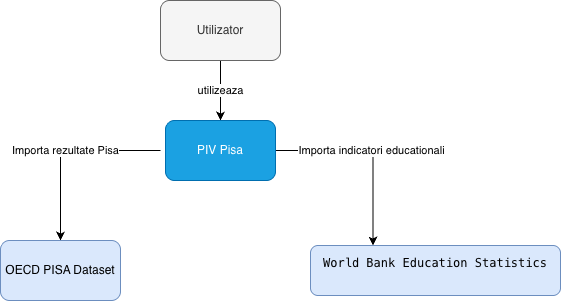
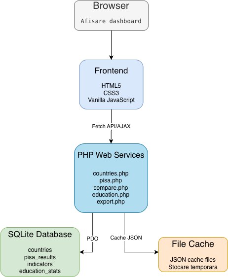
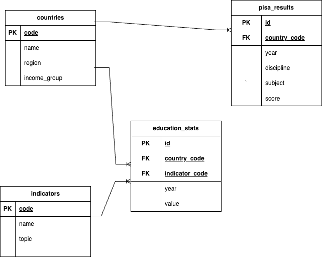

Autor: Mădălina Bitiușcă
PIV — PISA Results Visualizer este o aplicație Web dezvoltată pentru vizualizarea, analiza și compararea rezultatelor testelor OECD PISA și a indicatorilor educaționali proveniți din baza de date World Bank Education Statistics. Scopul aplicației este de a oferi utilizatorilor posibilitatea de a explora și interpreta date educaționale prin intermediul unor filtre flexibile, reprezentări grafice interactive și funcționalități de export.
Aplicația utilizează două surse principale de date:
Datele OECD PISA conțin rezultatele elevilor la:
Education Statistics furnizează indicatori educaționali precum rata alfabetizării, cheltuielile pentru educație și ratele de înscriere în sistemul educațional.
Aplicația utilizează o arhitectură bazată pe servicii Web.
Aplicația utilizează o arhitectură client-server. Browserul comunică asincron cu serviciile Web implementate în PHP prin Fetch API, iar acestea accesează baza de date SQLite folosind PDO și returnează rezultatele în format JSON.

Diagrama C4 Context prezinta interactiunea dintre utilizator, aplicatia PIV Pisa si sursele externe de date utilizate.

Diagrama C4 Container evidentiaza componentele tehnice ale aplicatiei si comunicarea dintre acestea.
Baza de date SQLite conține următoarele tabele:

Diagrama ERD prezintă structura bazei de date utilizate de aplicație și relațiile dintre entitățile principale.
/Api/countries.php/Api/pisa.php/Api/education.php/Api/compare.php/Api/export.phpAceste servicii furnizează datele necesare interfeței și funcționalităților de export.
Interfața este realizată folosind HTML5, CSS3 și JavaScript.
Dashboard-ul conține:
Designul este responsive și se adaptează dispozitivelor mobile.
Aplicația oferă trei tipuri de grafice:
Graficele sunt generate folosind SVG și JavaScript.
Aplicația permite exportul în:
Modulul de administrare permite autentificarea administratorului și vizualizarea statisticilor privind baza de date.
Pentru optimizarea performanței a fost implementat un mecanism propriu de caching bazat pe fișiere JSON.
Rezultatele API-urilor sunt salvate temporar și reutilizate pentru cereri identice.
PISA Results Visualizer reprezintă o soluție Web completă pentru analiza și vizualizarea datelor educaționale provenite din surse publice. Aplicația respectă cerințele privind serviciile Web, comunicația asincronă, exportul în formate deschise, administrarea și optimizarea performanței prin caching.